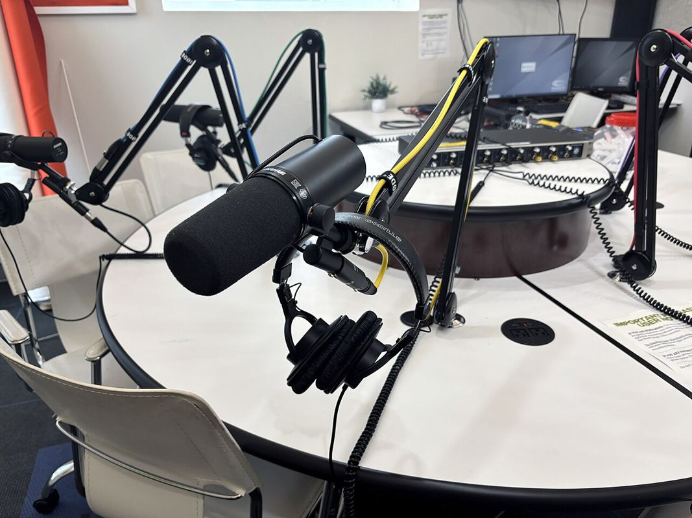

Ambiente de Produção
Ambiente de Produção Oral e Textual
Treine as duas provas de produção do seu exame com temas no formato oficial e correção detalhada — pela IA, na hora, ou por um professor.
Produção textual
Escrever
Temas no modelo da prova, com uma coletânea de três textos — trecho de livro, reportagem e artigo científico — e duas imagens para inspirar e embasar a sua redação.
Escolher um tema →
Produção oral
Ouvir e falar
Exercícios no formato dos simulados: documentos sonoros com questões de múltipla escolha e uma tarefa para falar (ou escrever) sobre o tema — com professor ao vivo, se você quiser.
Começar um exercício →Imagens: “Woman writing on a notebook with a pen”, Kristin Hardwick (CC0) · “Microphones in SPNN Podcast studio”, Myotus (CC BY 4.0), via Wikimedia Commons. As capas dos temas trazem o crédito de cada foto.